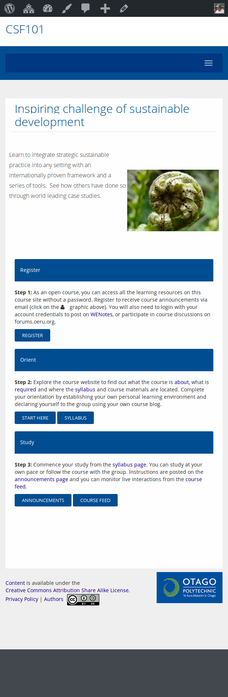

OERu Open Tech Toolset
Dave Lane (@lightweight)
Open Source Technologist, OER Foundation
OERu 16.10 Meeting, University of Highlands and Islands
Inverness, Scotland - 3-5 October 2016

OERu Minimum Viable Product
An accredited full year course of study
How will it work?
Step 1: Educators assemble OERs in WikiEducator.org
Step 2: Educators design Courses for independent study using OERu tools
Step 3: Courses offered by OERu
Step 4: Learners take Courses
Step 5: Learners gain perspective by sharing
Step 6: Learners request assessment from partners
Branded course communications lead learners to partner assessment services and qualifications.
Permissionless Learning
Ability to fail (or not) anonymously

Today all a learner needs is aptitude, motivation...and an internet connected smartphone.
Our toolset is entirely Open Source
Walking the "Open" talk
For Partners...
Try before you (don't) buy
Adapt quickly and decisively
Remove barriers
Economies of scale without being small fish
For Learners...
Access and empowerment
Reversible choices
Uncompromised freedom
Analytics
Designed to measure OERu effectiveness
Acknowledgements
The OERu Platinum Partners
The OERu Technology Working Group
This presentation is available online: http://oer.nz/16
Credits
Attribution for Arrow graphic on the Snapshot page.
{kind=link}
This presentation was delivered with Reveal.JS an open source presentation framework. Developers can get the code and others can use its point-and-click builder, Slides.com.
| Full Screen | F |
| Next Slide | Space |
| Speaker Notes | S |
| Thumbnail View | Esc |